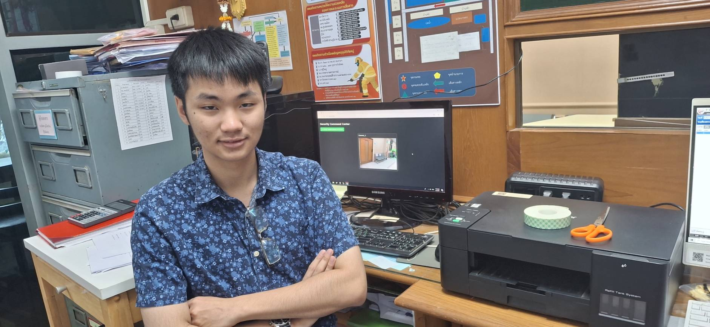
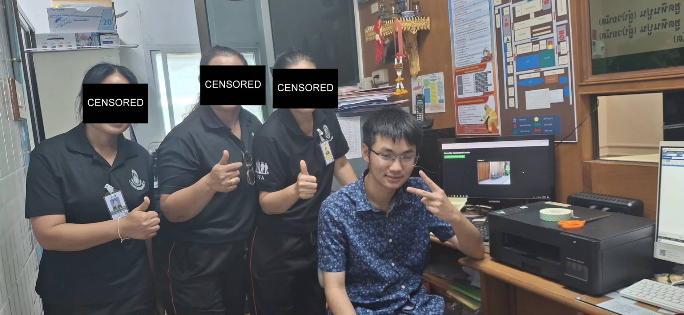
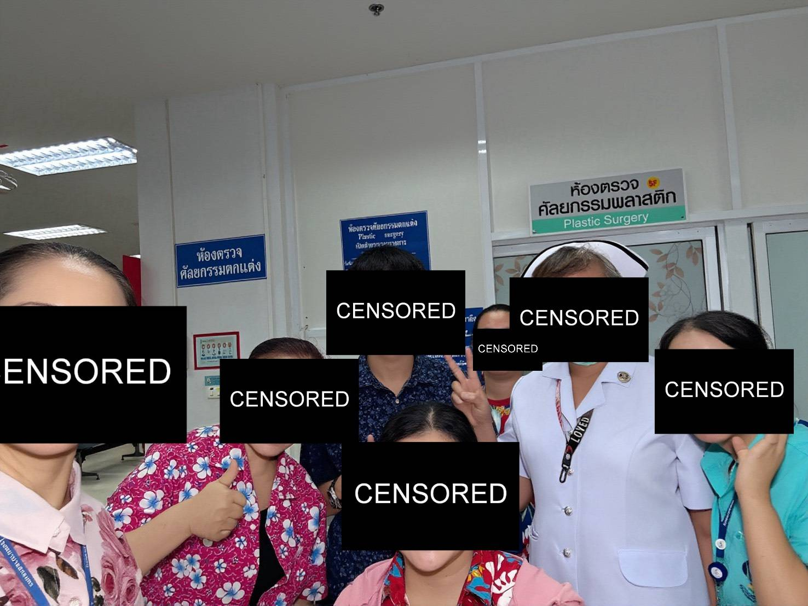
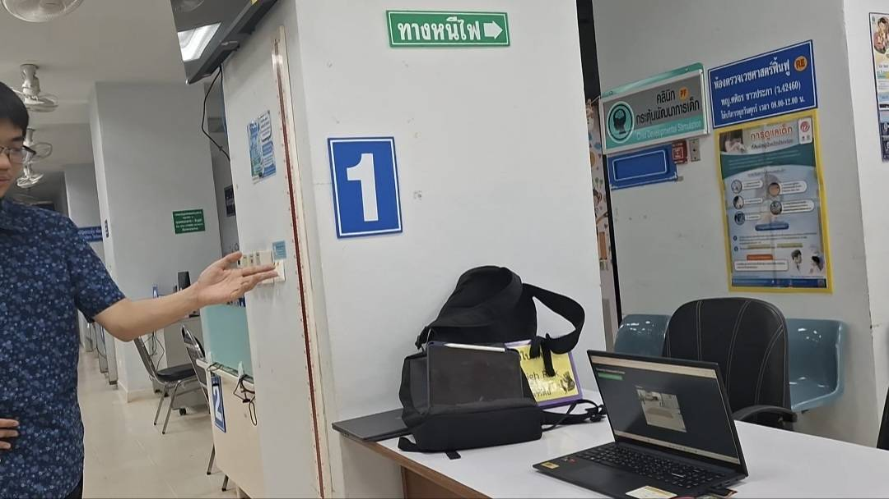
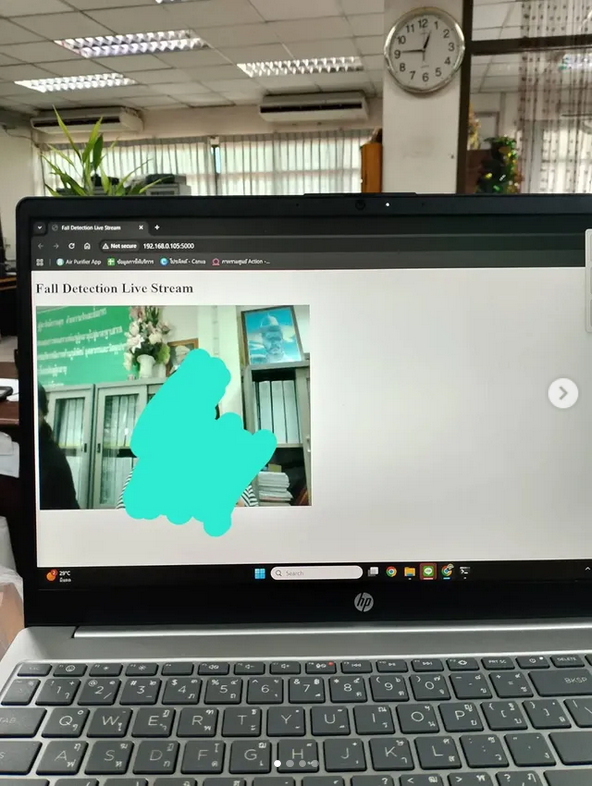

Operational Readiness
Deployment Registry
A track record of manual hardware installations and high-stakes environmental performance.
Active Site
Hospital Installation 01

Hardware Calibration
Ward Integration- Manual calibration of fall-detection sensors for 24/7 clinical monitoring.
- Optimization for low-end hardware to ensure reliable uptime in ward environments.
- 400 average patients monitored monthly.
Active Site
Hospital Installation 02

Staff training
device demonstration- Training staff for daily usage
- 800 average weekdaypatients monitored monthly
Demo Environment
Ban Bangkhae Home

Live Demonstration- Deployment in an area with 30 residents
- Community engagement and feedback collection
Execution Timeline
Deployment Milestones
April 2026
Mass deployment and public launch Live
After winning silver medal at SWU hackatron the system is deploy in 2 hospitals while also receiving more than 120 download after 1 month of public availability.
October 2026
Test deployment and external validation
Demo deployment in Ban Bangkahe 2 and validated at Hackatron competition hosted by SWU
March 2025
Finish v.1 of the system
Finish the android app, web-hook server and the fall detector
December 2024
Demo and Testing phase
Established core objectives for low-complexity, affordable fall detection designed for low-end computer hardware.